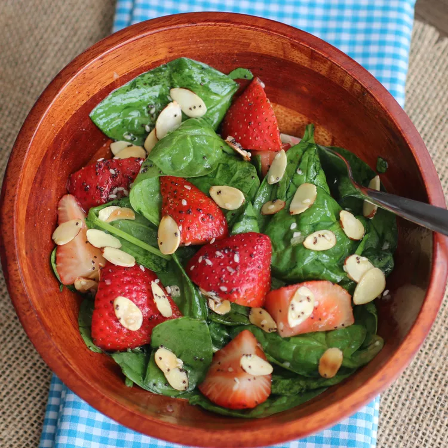

Strawberry Spinach Salad

Description
This strawberry spinach salad is a great way to get kids to eat spinach! Someone brought this salad to a potluck dinner, and I had to have the recipe. Since then, I've made it many times and I've been asked for the recipe every time I take it somewhere.
Ingredents
Dressing
- ½ cup white sugar
- ½ cup olive oil
- ¼ cup distilled white vinegar
- 2 tablespoons sesame seeds
- 1 tablespoon poppy seeds
- 1 tablespoon minced onion
- ¼ teaspoon paprika
- ¼ teaspoon Worcestershire sauce